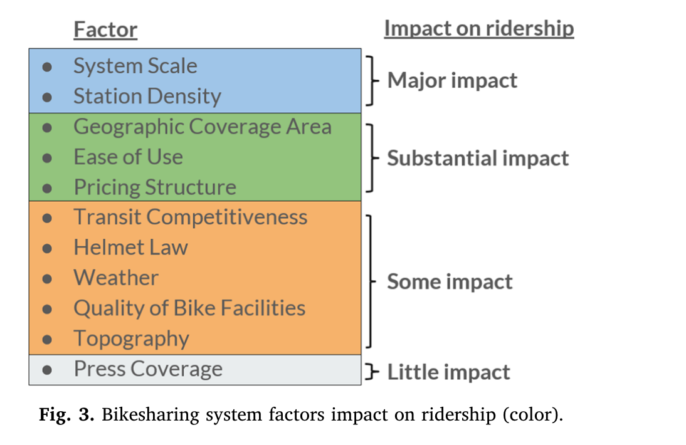

Scroll down to follow along with the big picture story
Scroll (or click) left/right for some extra details that aid (but aren't essential to) the main storyline.
Sometimes we might have more to say about a topic that doesn't quite fit in a page. You'll find these details in these left/right slides.
NOTE: If we end up needing some orientation for our viz, we'll use this slide as a tutorial page.
Once you're done with the details, you can always scroll back down to get back to the big-picture story!
We've ruled out two naive reasons. Now let's look at what research suggests. The chart below is copied from a research article that categorizes plausible reasons for Pronto's failure. We will have a similar chart with a smaller set of reasons that we'll pursue. Similar to this chart, we'll use color coding to segment the reasons by their relative importance.
A few sources have hypothesized that Pronto may have operated at too small a scale - not enough bikes covering the city. We'll describe some details on why this is plausible reason.
A few sources have hypothesized that Pronto stations were not accessible from many places of interest such as transit, popular destinations, etc. We'll describe some details on why this is plausible reason.
Based on the visualizations we're able to complete, we might add more reasons here.